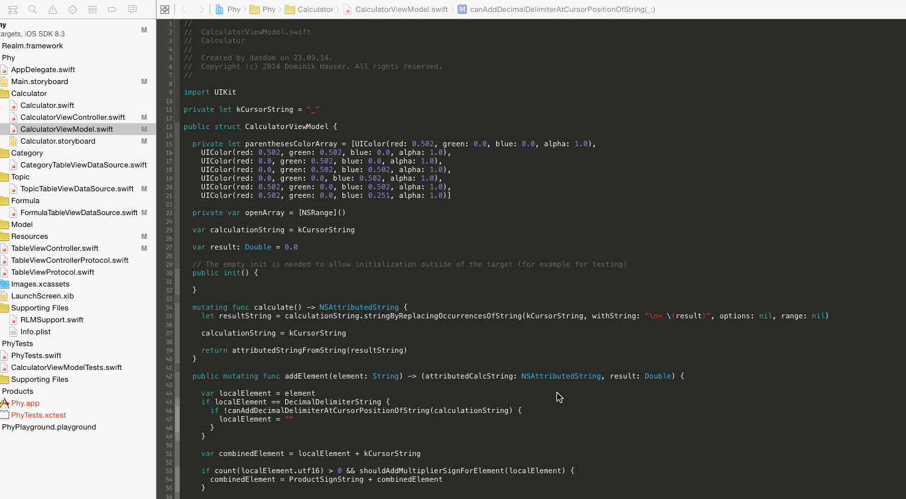
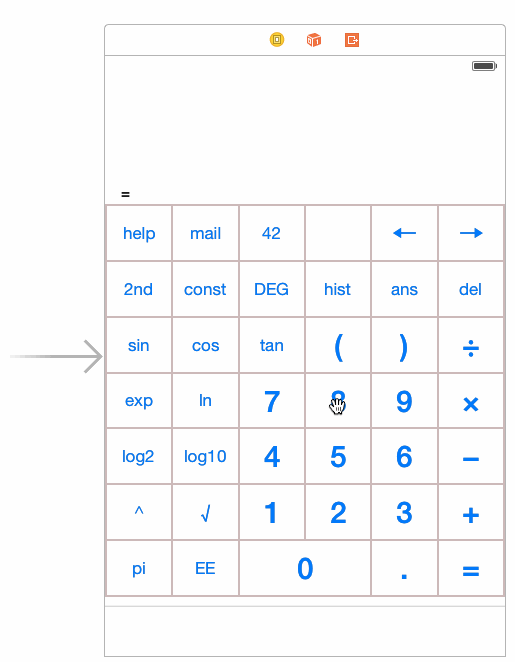

Why I Still Don't Like The Interface Builder
Even with the improvements of the Interface Builder in the last years I still prefer doing iOS interfaces in code. Here is why:
Context shift
I'm a coder. What I do best is coding. When ever I switch from code to Interface Builder I have to switch context. Interface Builder is visual. There are many places where I have to change something to get the desired look. The mouse pointer has to move long distances on screen.
Less conflicts
I still encounter merge conflicts for storyboards when working with others on the same project.
Options all over the place
The elements in iOS become more and more complex. This means there are many options for interface elements. In Interface Builder you have to click through all the inspectors to find what you are searching for. When writing code most of the times I already know the first characters for what I'm trying to do and autocompletion does the rest.
Easier get help
It's easier to post code than screenshots in case you need help on StackOverflow ;). If you find code on Github you can see without downloading how the interface is build.
No betas for you
I had a few times that a project could not be opened by Xcode when I opened it in a beta of Xcode because the Interface Builder file structure had been changed.
No refactoring
Code is easier to refactor than storyboards.
No inheritance
It is impossible to inherit from a storyboard scene. In code you can easily make subclasses to reuse code. Using a storyboard you have to make two scenes even if they share 90% of their UI elements.
Harder to DRY
At work I'm working on an app that has 8 targets right now (more to come). Each target has several storyboards. Differences in the interface for the different targets are managed in the different storyboards. It turned out that this isn't a good idea. We had to fix one layout bug in 16 storyboard scenes (8 universal targets). And this happens again and again. We are right now moving most of the more complex user interfaces to code to prevent repeating ourselves.
Layout constraints
For me it's easier to see all the constrains of a view in code. In Interface Builder I have to open the size inspector to see the constraints. And then I see the constraints of one view. And each row is one single constraint. In code when using visual format language there are several constraints in one string. For example the visual format language sting "|-[nameLabel]-[button(30)]-|" represents 4 constraints on three interface elements. In combination with layout format options the layout becomes much easier to understand. At least for me.
Performance Performance Performance
I use a MacBook Air (Early 2015) for development. The performance of Interface Builder on that machine is far from acceptable. Here are two examples (using Xcode 6.3.2) from a real project I'm working on right now:
One could argue that a MBA isn't the right machine for a developer. But in my opinion a slow machine should slow down compilation and not editing code or user interface.
I would love to hear/read what you think. Ping my on Twitter.